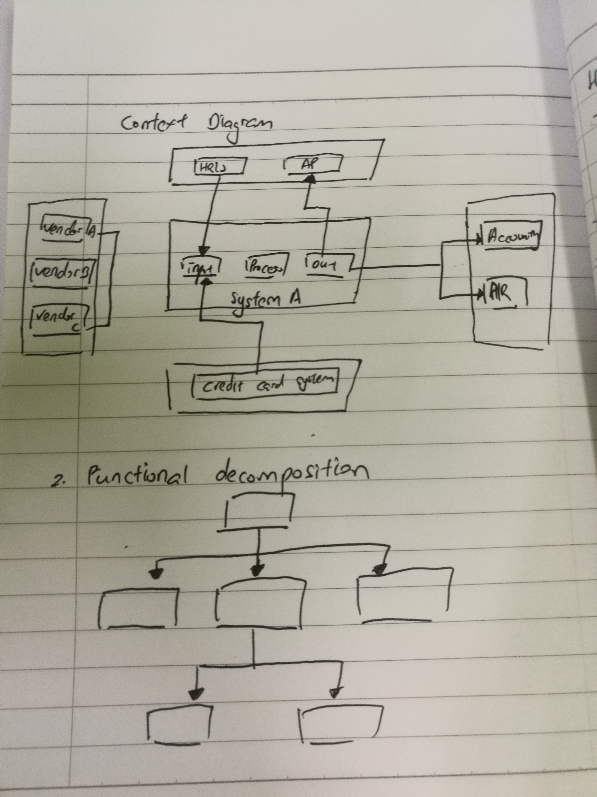
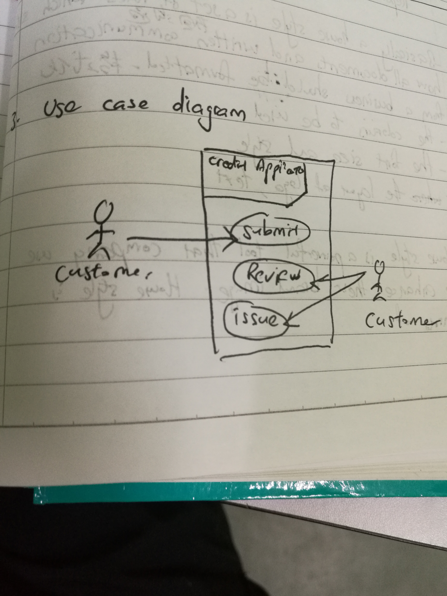

Firsy is context diagram.Ii define the sistem's boundary.The system was put on the center, identify customer, external and internal, organizationend user and supplier of third party. Second is functional decomposition. The diagram prvides a view of business process or main function of system from top to bottom. the functional decompositin similar with organizaton chart so user can easily to understand. Third is use case diagram. Use case diagram will help to depict the interaction between system and user. user role called "actor" and different processes of functiond are represented.
 